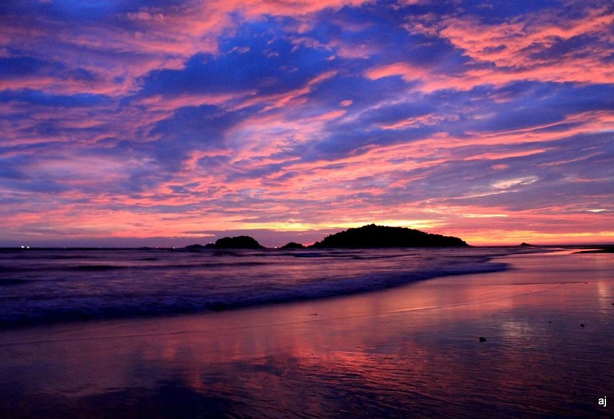
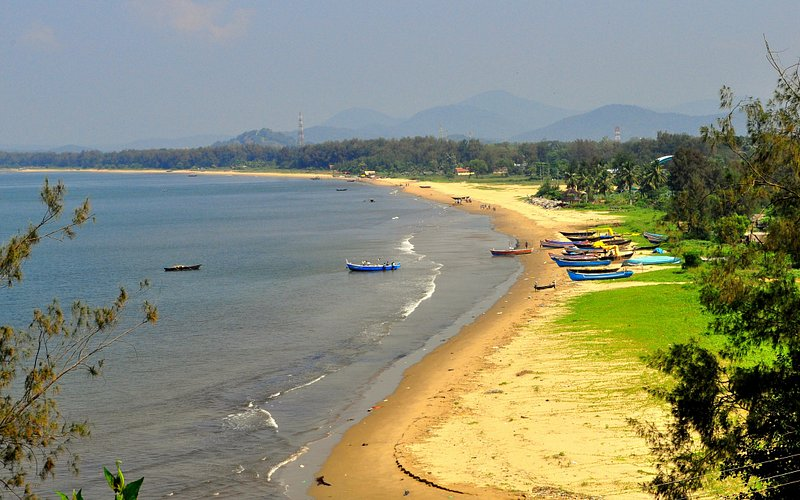

WELCOME TO KARWAR
Discover the Beauty of Karwar
Explore the coastal charm, beautiful landscapes, rich culture and peaceful surroundings of Karwar.
Explore Karwar
ABOUT KARWAR
Where the Coast Meets Nature
Karwar is a beautiful coastal city in Karnataka known for its beaches, greenery, scenic landscapes and peaceful surroundings.
From relaxing near the sea to exploring nature and experiencing local culture, Karwar offers something for everyone.
Discover MoreEXPLORE
Places to Discover
Explore some of the beautiful experiences and attractions around Karwar.
EXPERIENCE
Experience the Spirit of Karwar
Karwar is more than just a coastal destination. Its natural surroundings, local lifestyle and coastal culture make it a memorable place to explore.

Coast
Relax beside the beautiful Arabian Sea.
Nature
Enjoy greenery and scenic surroundings.

Culture
Experience the traditions of the region.
Food
Taste delicious coastal cuisine.
DISCOVER SOMETHING NEW
Ready to Explore Karwar?
Discover the coast, nature, culture and experiences that make Karwar special.
Get in Touch